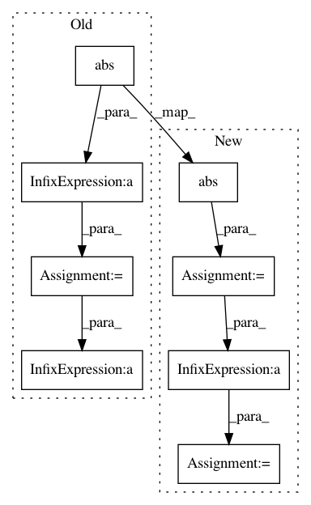

055c61d73514d471158ee36b83762802c8d4e3d4,lib/loss/clipped_weighted_huber_loss.py,ClippedWeightedHuberLoss,forward,#ClippedWeightedHuberLoss#Any#,22
Before Change
self.diff = (x0_c - x1_c) * self.weight
y = xp.square(self.diff)
mask = y > (self.delta ** 2)
y -= mask * xp.square(abs(self.diff) - self.delta)
y *= 0.5
return xp.array(y.sum() / y.dtype.type(y.size), dtype=y.dtype),
def backward(self, inputs, gy):
xp = cuda.get_array_module(*inputs)
After Change
x1_c = xp.clip(x1, self.clip[0], self.clip[1])
self.diff = (x0_c - x1_c) * self.weight
diff = xp.abs(self.diff)
y = xp.square(diff)
diff -= diff.dtype.type(self.delta)
xp.maximum(diff, 0, dtype=diff.dtype, out=diff)
xp.square(diff, out=diff)
y = (y - diff) * 0.5
return y.mean(),
def backward(self, inputs, grad_outputs):
In pattern: SUPERPATTERN
Frequency: 3
Non-data size: 8
Instances
Project Name: tsurumeso/waifu2x-chainer
Commit Name: 055c61d73514d471158ee36b83762802c8d4e3d4
Time: 2018-07-14
Author: tsurumeso@gmail.com
File Name: lib/loss/clipped_weighted_huber_loss.py
Class Name: ClippedWeightedHuberLoss
Method Name: forward
Project Name: mozilla/TTS
Commit Name: e2d974e8be89cdbf7bfae6ed39ebe807e8033863
Time: 2018-04-17
Author: egolge@mozilla.com
File Name: utils/audio.py
Class Name: AudioProcessor
Method Name: _griffin_lim
Project Name: mozilla/TTS
Commit Name: f1271b4ce81cdecc940b8ffa8a1f12c3476ef01f
Time: 2018-08-09
Author: egolge@mozilla.com
File Name: utils/audio.py
Class Name: AudioProcessor
Method Name: _griffin_lim